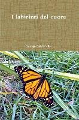

7:00 · 1 OPERA
I labirinti del cuore. Premessa.
Il filo del discorso
Lettura della premessa a I labirinti del cuore. Il labirinto viene interpretato come figura della ragione, del paradosso e dei molteplici livelli del vero, con richiami a Joyce e Borges. Il testo pone il cuore e l’esperienza dell’amore al centro del passaggio dal sapere alla saggezza, attraverso Diotima e Socrate. La conclusione difende il linguaggio stratificato di poesia e filosofia contro la pretesa che le apparenze esauriscano ciò che può essere compreso.
I libri nel discorso

I labirinti del cuore
Note sul riferimento
Copertina: Lulu.com · edizione commerciale ISBN 9781105055430
Immagine associata all’ISBN 9781105055430 nei cataloghi commerciali. Le schede riportano date discordanti 2011/2012: l’anno non viene convalidato. Non viene equiparata all’indicazione editoriale pronunciata nel video. La precedente qualificazione bibliografica resta invariata.
L’apertura annuncia la premessa a I labirinti del cuore, Viaggio per terre sconfinate e l’indicazione editoriale del 2011.